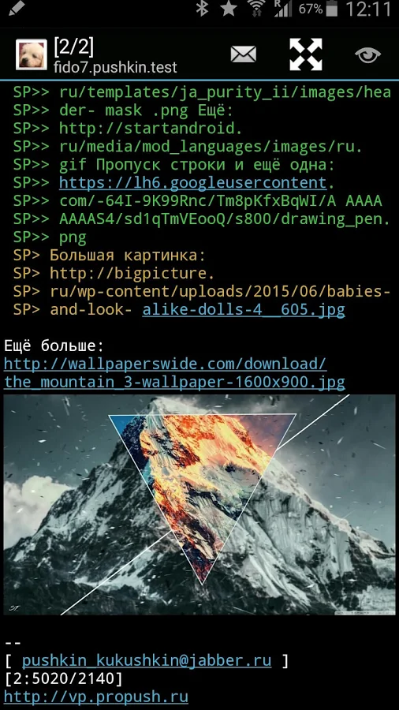

Воспоминания о фидо или "меня зовут 2:/5054:74.20"

Если оглянуться назад и попытаться ответить на вопрос, по какому периоду своей жизни я тоскую больше всего и в какой период прошлого я хотел бы отправиться на денёк-другой в гости, то наверное это будет примерно второй-третий курс университета. Почему именно туда? Множество новых знакомых, первая работа, первые отношения, погружение в программирование и linux, появление первых телефонов, корявые ява-приложения, подключение витухи на 64к, посиделки с друзьями, дни рождения, записи песен, дача, сборка сервера внутри дивана, и отдельным пунктом - фидо. Фидо - это удивительное явление. Если бы не было фидо, на интернет я бы смотрел совершенно другими глазами. Сейчас интернет через призму моего восприятия представляет из себя огромную такую помойку, долину мусорных куч, среди которых где-то на горизонте высятся небоскрёбы больших корпораций - гугла, яндекса, IBM, огромные грязные мегалиты коммуналок "Вконтакте" и Facebook, обветшалый LiveJournal, с доброй половиной заколоченных окон, дом престарелых "Одноклассники"... И в тени этих живых и доживающих огромных и не очень зданий, копаются в мусорных кучах бобики. Огромное количество бобиков в бессчётном количестве куч. Кто-то радостно похрюкивая кушает какашки, кто-то эти какашки воспроизводит в комментариях, кто-то пытается найти ценную и косточку той или иной степени свежести. У кого нюх получше - те находят то, что искали, остальные плещутся в отходах, обмазанные рекламой казино, курсов игры на форексе и предложением купить настоящий айфон за полцены.
В фидо всё было не так. Какие-то отдельные струны души задевает воспоминание о виде GoldEd под досом на CRT мониторе. 80 символов в ширину, 25 в высоту - всё как положено. Никаких жидких кристаллов, никаких SSD, только звуки модема, похрустывание винта (тогда оно было намного громче, чем на нынешних) и желтеющая клавиатура WinKeys c DIN разъёмом. Из сентиментальных чувств всё ещё хранится у мамы системник с Pentium 233 MMX под Socket 7, Sound Blaster 16 и модемом USR на 56к, на котором так и остался настроенный фидопакет тех времён. Эдакая живая капсула времени. Когда ностальгия совсем уж возьмёт меня за горло - сотру с него пыль и буду ночь напролёт перечитывать личку и эхи, возвращаясь в собственную молодость.
Но что же было такого прекрасного в самом фидо кроме ностальгии? Ответ на самом деле очень простой - люди! Люди были самой большой ценностью фидо. В основном конечно, айтишники, но и людей с гуманитарным складом ума там было предостаточно. Что удивительно, почти все, с кем я там общался, оказывались крайне приятными, культурными и образованными собеседниками. Там был даже человек, плотно увлекающийся марихуаной, но даже он на какой-то мой вопрос ответил внушительным постом, достойным цитирования в научной работе. Только теперь я понимаю, что вероятно моя антипатия к людям, пишущим с большим количеством грамматических ошибок вызвана тем, что в фидо таких практически не было. Помимо культуры общения, которая там присутствовала как нечто само-собою разумеющееся, была и некая доброжелательность, она прямо ощущалась, хотя может быть это просто следствие наличия в одной точке некоторого количества хороших людей.
Безусловно, были и люди попроще и погрубее, но их поведение в общих эхах регламентировалось сводом правил, а для любителей мата, чернухи и прочего существовали отдельные эхи. В Перми это была NO.MARGINS. Собственно, если тебе хочется с кем-то пос....ться, выпустить пар - welcome, вот тут специально для этого устроен общественный туалет. Разумно, логично, практично.
Сейчас мы избалованы гигагерцами, мессенджерами и интернетом на смартфонах. В фидо же ты должен был модемом дозвониться (преимущественно ночью или поздно вечером) до ноды (спасибо Паше Ремнёву за терпение и поддержку), чтобы твоя машина могла забрать и растоссить почту. Ты ждал каждый вечер заветного коннекта, чтобы прочитать то, что написали тебе, ответить и успеть отправить обратную почту в ту же ночь. Возможно поэтому мы ценили общение, ценили друг-друга и время, которое мы друг на друга тратили. Учились излагать свои мысли, спорить, аргументировать. Даже и не знаю, на каком уровне были бы мои навыки общения сейчас, если бы в моей жизни не было фидо. Я был куда больше закомплексован и замкнут в себе. Фидо же предоставляло возможность и время на обдумывание своего ответа собеседнику, более того, такой формат общения даже подталкивал к этому. Когда у тебя есть возможность ответить раз в сутки - невольно подумаешь, что и как написать. И даже при таком режиме связи люди умудрялись играть в настольные ролевые игры по сети. Мастер писал вводную (а тут привет другому Паше - Стукову - и тебе спасибо огромное, ты просто человечище!), собирал ото всех заявки на действия, бросал за всех кости и отыгрывал роли. Это было безумно захватывающе. Каждый вечер я ожидал как праздник. Паша вообще мог бы писать очень неплохое фентези, как мне кажется.
Ещё была интересная традиция. Не знаю, правда, было ли так только на нашей ноде или это традиция более широкая. Как только в чьёй-то жизни происходило какое-то важное или не очень событие, правилом хорошего тона было написать об этом отчёт в локальную эху. Например, у кого-то сын родился, кто-то хорошо съездил в отпуск, кто-то получил диплом и тому подобное. Было дело, я поучаствовал в дтп, получил серьёзную черепно-мозговую травму, 16 швов на голову. Ну и в своей манере с изрядной долей юмора написал отчёт, когда выписался из больницы. Все смеялись, подбадривали, а одна девушка написала в личку - мол, не нужна ли мне помощь, да и вообще всячески посочувствовала. Я был крайне растроган и мы с ней начали общаться. С тех пор прошло уже лет 13 или 14, а мы всё ещё хорошие друзья. Вера, если ты это читаешь - знай, ты замечательный человек и я тебя очень-очень ценю.
Да и вообще, кроме коммуникации по сети, раз в неделю проходило мероприятие под условным названием "фидопойка", на котором собирались фидошники, а так же их друзья, знакомые, незнакомые, просто те, кто шёл мимо - одним словом, раз в неделю собиралось человек 20-50 народу и общалось. Живьём! Просто так, потому что им это было по душе. Где сейчас эта толпа народа? Все сидят по домам с детьми, а те, кто сейчас в том возрасте, в котором мы были тогда, просто создают группу в контакте или телеграме. Так же проще? Проще! Но это не то, совсем не то.
Так как были фидопойки, то многие друг-друга знали лично (пить при этом было совершенно необязательно). Более того, люди в фидо общались от своего имени, никто не использовал ников. Да, были виртуалы, но это скорее было редким исключением, чем правилом.
И да, о правилах стоит упомянуть отдельно. В фидо был свой свод правил - фидополиси. Это общие правила, которые работали "по умолчанию". Всё пространство делилось на отдельные экоконференции. Самый близкий к этому понятию аналог в интернете - форум с подфорумами. Эхоконференции могли быть локальными (в пределах одной-двух нод) и глобальными - доступными для подписке всей стране, а то и за её пределами. В каждой эхоконференции действовал свой свод правил. В подавляющем большинстве случаев эти правила (эхополиси) совпадали с глобальным сводом (фидополиси) и описывали вполне логичные ограничения. В подавляющем большинстве экоконференций был запрещён мат, наезды, оскорбления, троллинг и тому подобное. За нарушения можно было получить "награду". За что-то не очень серьёзное можно было получить "звезду" - [*], три звезды - плюс - [+], три плюса - [!] в этот момент тебя переводят в read only и ты не можешь писать в эхоконференцию установленное модератором время - несколько недель, месяц, полгода. Особо упоротых рецедевистов отключали насовсем, а некоторых и банили вообще наглухо. Таким вот нехитрым образом фидо отфильтровало в своё время тех, кто не умел или не хотел держать себя в рамках. В модераторы и комодераторы выбирали путём голосования. Одним словом, правила были, они соблюдались, работали и это было хорошо. В интернете же подобного механизма нет и когда поднимаются слухи о "допуске в интернет по паспорту" и кто-то начинает по этому поводу возмущаться, я про себя думаю "побыстрее бы уже".

И вот, эпоха фидо давно прошла, люди разошлись кто в интернет, кто в реальную жизнь. Всё завяло, постапокалипсис, кругом выжженная пустошь. И тут внезапно один человек из подмосковья по имени Сергей решил возродить минувшую эпоху, поднял у себя фидошную ноду (а может быть она у него и раньше была) и написал андроид клиент под это дело. Допиливал, развивал, поддерживал, помогал подключиться и всё настроить новым поинтам - одним словом, потратил, да и продолжает похоже на это тратить уйму своего личного времени и сил. Я тоже ставил, настраивал, общался какое-то время, а потом понял, что в текущем ритме жизни у меня нет времени и на это тоже. Да и люди в собеседниках попались замечательные, но уже не те, кого я знал *дцать лет тому назад. Одним словом, моё общение там тоже сошло на нет. В любом случае, и Сергею тоже огромное спасибо за то, что он сделал.
Удивительным остаётся то, что фидо было огромной сетью, которая охватила в своё время весь мир и при этом держалась на чистом энтузиазме и простых, но хороших людях, помогающих друг-другу. И сколько бы лет ни прошло, я всегда их буду вспоминать с особой теплотой и благодарностью.
Теги: fido, ностальгия